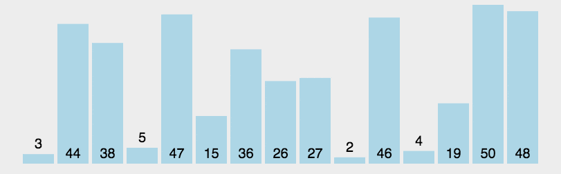

找一個數，並且把這個數調整到：讓左邊的元素比它小，右邊的元素比它大，再對左右兩遍做一樣的事。
那個數我們稱作 pivot，會把數列分割成左右兩邊。 例如說現在有一個數列是：14, 7, 6, 9, 10, 20, 15 我們挑選 14 當作 pivot，調整過後變成：7, 6, 9 , 10, 14, 20, 15，左邊都比它小，右邊都比它大。 而當你把 14 調整好的時候，其實這個元素就排好了！因為左邊比它小，右邊比它大嘛，所以這一個數字就排好了。 接著只要對左右兩邊還沒排好的也做快速排序就行了。 而快速排序的核心在於你要怎麼找到那個數，如果你找的數字剛好是數列的中位數，那當然效率最高。如果找的是最小的數， 那就是最壞的情形，時間複雜度就變成O(n^2)，有分割跟沒分割一樣。 我們直接假設第一個數就是 pivot，這樣比較方便。 那再來有一個問題是，要怎麼把這個數字調整到左邊比它小，右邊比它大呢？我們可以維護一個變數叫做 splitIndex， 讓這個 index 左邊的元素都比 pivot 小，而這個 index 本身以及它右邊的元素都比 pivot 大。 當你掃一遍陣列，發現某個元素比 pivot 小的時候，就把這個元素跟 splitIndex 上的元素交換， 並且把 splitIndex + 1，就可以做到我們上面想做的事情了。最後記得把 pivot 跟 splitIndex - 1 （也就是最後一個比它小的元素）交換，就能夠把 pivot 放到正確的位置上了。